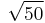

Wire
From openEMS
Description
Define a cylinder-like wire by its coordinate arrays and radius.
CSX = AddWire(CSX, propName, prio, points, wire_rad, varargin)
with the parameters
- CSX: The original CSX structure
- propName: name of the assigned property
- prio: priority of the primitive
- points: two-dimensional coordinates of the base polygon
- array column refers to point number
- array row refers to its x,y,z- position:
points(1,point_number): position-x of 'point_number'.
points(2,point_number): position-y of 'point_number'.
points(3,point_number): position-z of 'point_number'.
- wire_rad: wire radius
- varargin: a key/value list of primitives variable arguments
See also
Example
This example creates a Biquad antenna from wire of radius 0.1 on xz-plane, with length of each side=.
points(1,1) = 0;points(2,1) = 0;points(3,1) = 0;
points(1,2) = 5;points(2,2) = 0;points(3,2) = 5;
points(1,3) = 10;points(2,3) = 0;points(3,3) = 0.5;
points(1,4) = 15;points(2,4) = 0;points(3,4) = 5;
points(1,5) = 20;points(2,5) = 0;points(3,5) = 0;
points(1,6) = 15;points(2,6) = 0;points(3,6) = -5;
points(1,7) = 10;points(2,7) = 0;points(3,7) = -0.1;
points(1,8) = 5;points(2,8) = 0;points(3,8) = -5;
points(1,9) = 0;points(2,9) = 0;points(3,9) = 0;
CSX = AddMetal(CSX,'metal');
CSX = AddWire(CSX,'metal',10, points,0.1);